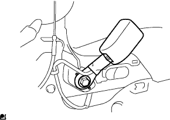

|
Remove the claws and pull the front seat leg cover No. 1 in the direction of the arrow in the figure.
Front seat belt LH removed |
| 1. Precautions when replacing the seat belt of the front seat ASSY LH |
| 2. Remove the front seat leg cover No.1 |
|
Remove the claws and pull the front seat leg cover No. 1 in the direction of the arrow in the figure.
| 3. Remove the front seat leg side cover cap |
 |
Use a minus thin blade driver with a protective tape to remove the claws and remove the front seat leg side cover.
| 4. Remove the front seat leg cover |
 |
Remove the claws and remove the front seat leg cover.
| 5. Front sheet leg cover LH (LH seat yo) removed |
 |
Remove the claws and remove the front seat leg cover LH (LH seat yo).
| 6. Remove the front seat leg cover No.2 |
Remove four screws.
Remove the front side and remove the front seat leg cover No.2.
| 7. Remove the front sheet ASSY LH |
Cut the battery minor Star Minal.
Cut the connector of the seat side wire harness and remove the bolt.
Remove the two bolts on the front side.
Remove the two bolts on the rear side.
Remove the front sheet Assing LH from the vehicle.
| 8. Remove the front seat headrest ASSY |
Remove the front seat headrest ASSY.
| 9. Remove the front seat cushion shield Inn LH |
Take off the screw.
Remove the claw from the rear side.
Slide the direction of the arrow in the figure and remove the front seat cushion shield INN LH.

| 10. Remove the front seat inner na belt ASSY LH |
|  |
Cut the innabelt connector.
Remove the wire harness clamp.
Remove the bolt and remove the front seat inner na belt ASSY LH.
| 11. Reclining Adjusta Lelley's Handle LH removed |
 |
With the release handle pulled up, use a negative thin -blade driver with a protective tape to remove the claws, and remove the reclining Azilla Sterry Relley Relley Handle LH.
| 12. Remove the front seat cushion shield LH |
Take off the screw.
Remove the claw from the rear side.
Slide the direction of the arrow in the figure and remove the front seat cushion shield LH.

| 13. Remove the rear seat shoulder belt cover LH |
 |
Use a flathead screwdriver with a protective tape to remove the claws.
Remove the seat belt and remove the rear seat shoulder belt cover LH.
| 14. Front seat backboard SUB-ASSY LH is removed |
Make the seat Batsuku in advance.
Paste the protective tape around the front seat crossboard.
Raise the lever of the front seat crossboard and remove the screw.
Use a minus thin -blade driver with a protective tape to remove the front seat crossboard under the front seat cross cover.
Remove the seat belt and pull the Batsuku board in the direction of the arrow in the figure.
Cut the cable and remove the front seat crossboard.

| 15. Front sheet Outabelt Assy LH removed (Ancplate) |
 |
Remove the bolt and remove the front seat Otabelt Assy LH Ancplate.
| 16. Rear seat back rock bezel UPR separation |
Take off two screws.
 |
Shift the direction of the arrow in the figure and remove the claws.
| 17. Remove the front seat belt cover cover |
 |
Remove the claws and remove the seat belt hole cover from the rear seat cross clock bezel.
| 18. Rena seat back rock bezel UPR is removed |
Remove the seat belt and remove the rear seat back rock bezel UPR.
| 19. Remove the front seat headrest support |
Remove the hogling and open the upper part of the seat cross cover.
 |
Remove the claws and remove two front seat headrest support.
| 20. Front seat backpad (cover Tsuki) LH removed |
Remove the front seat Batsuku cover and pad.
| 21. Front seat cushion cover & pad LH removed |
Paste the protective tape around the front seat cushion shield LWR LH.
Front seat cushion cover & pad LH's cushion frame portion is caused.
Remove the J hook on the front of the cushion cover.
Use the roof molding rimover to remove the rear side and remove the front seat cushion cover & pad LH.
| 22. Reclining adjuster inside cover LH removed |
 |
Take off the screw and remove the claws.
Remove the sub -sheet lock control cable and remove the reclining Ajiya Stein Side Cover LH.
| 23. Reclining adjuster inside cover RH is removed |
Take off the screw.
Remove the claws and remove the reclining Ajiya Stein Side Cover RH.
| 24. Front seat cushion shield LWR LH removed |
 |
Remove the claws.
Remove the seat belt and remove the front seat cushion shield LWR LH.
| 25. Remove the rear seat belt holder No.2 |
Remove the claws and remove the rear seat belt holder No.2.
| 26. Remove the front seat sourder belt guide |
Remove the claws and remove the front seat shiorda belt guide.
| 27. Front sheet outa belt ASSY LH removed (retractor part) |
 |
Use a thin -bladed flashed screwdriver with a protective tape to remove the claws, pull the locking button in front and unlock the lock.
Separate the connector (for plitensyona).
 |
Remove the two bolts and remove the front seat outa belt ASSY LH.